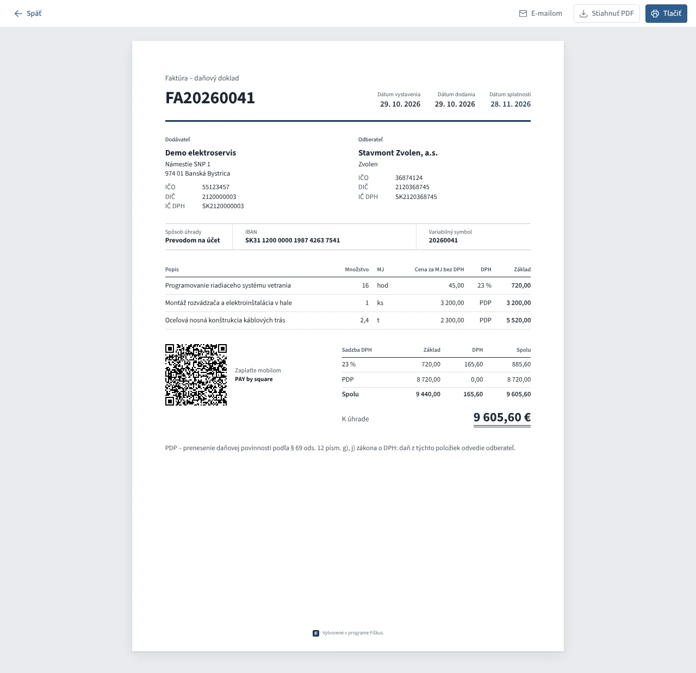
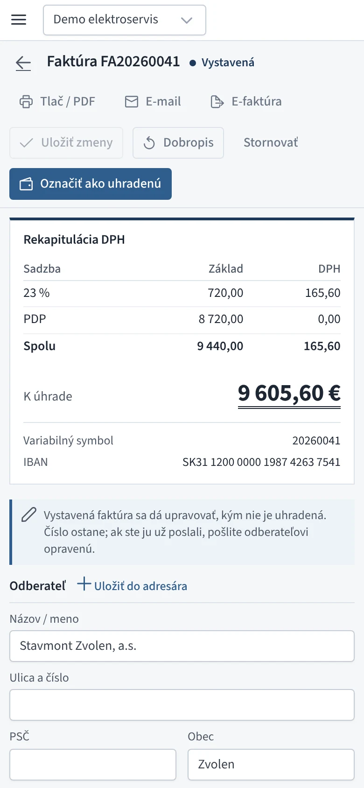
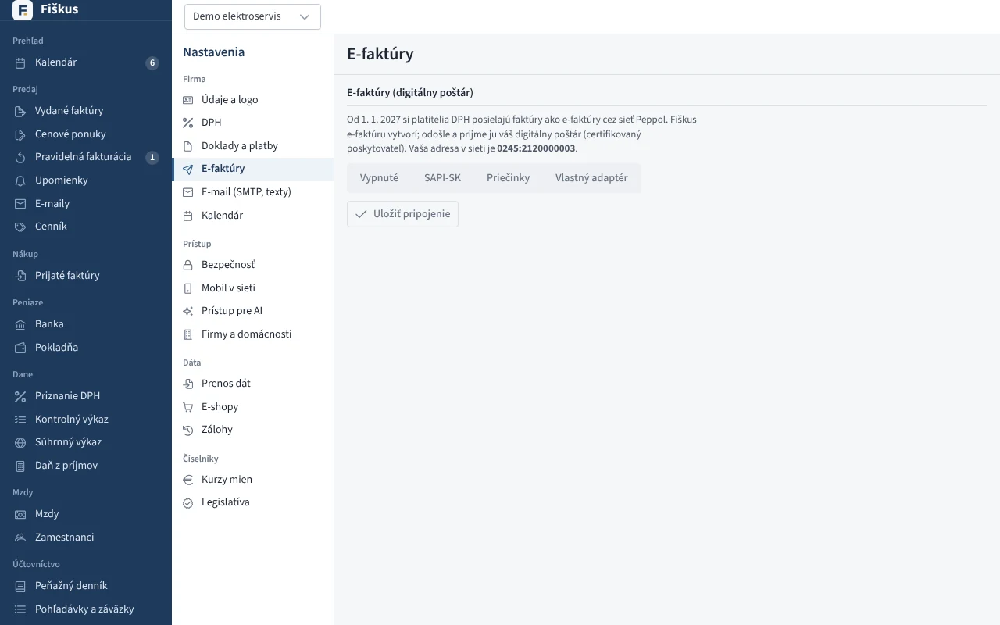

Faktúry a dobropisy¶
Životný cyklus¶
 Vystavená faktúra s prenesením daňovej povinnosti pri položkách a rekapituláciou DPH
Vystavená faktúra s prenesením daňovej povinnosti pri položkách a rekapituláciou DPH
| Stav | Čo sa deje |
|---|---|
| Koncept | Ľubovoľne sa mení, nemá číslo, nikde sa nepočíta. |
| Vystavená | Dostane číslo z radu (bez dier), ide do DPH a kontrolného výkazu, vznikne pohľadávka. |
| Uhradená | Úhradu priradí banka, pokladňa alebo ručný zápis; čiastočné úhrady sa sčítajú. |
| Stornovaná | Iba ak ešte nikam nevstúpila; inak sa opravuje dobropisom. |
Sumy, DPH a rekapituláciu podľa sadzieb počíta server pri každej zmene riadku — rozhranie iba ukazuje výsledok. Konečná suma je dvojito podčiarknutá ako v účtovnej knihe.
Úprava vystavenej faktúry¶
Vystavenú faktúru možno opraviť (číslo ostane, zmena ide do auditu), kým:
- nie je uhradená,
- nie je priznaná v DPH (po 25. dni po skončení obdobia),
- nebola odoslaná ako e-faktúra,
- nemá dobropis.
Potom sa opravuje iba dobropisom.
Prečo také prísne pravidlo
Faktúru, ktorú už odberateľ zaúčtoval alebo ktorá je v podanom priznaní, nemožno potichu prepísať — u odberateľa by ostala pôvodná verzia a v priznaní iné číslo než v knihách. Dobropis je stopa, ktorú vidia obe strany aj daňový úrad.
Dobropis¶
Dobropis (opravná faktúra) môže byť na celú faktúru alebo na časť položiek. Fiškus stráži, aby dobropisy neprekročili pôvodnú faktúru, a použije sadzby DPH platné k pôvodnému dodaniu. Dobropis k neuhradenej faktúre sa s ňou započíta.
Platba a odoslanie¶




- PAY by square — QR kód na tlači aj v PDF, z hotových súm faktúry.
- E-mail — PDF zo servera cez vlastný SMTP, história odoslaných e-mailov.
- E-faktúra — UBL 2.1 (Peppol BIS Billing 3.0), adresa
0245:DIČ; odoslanie cez digitálneho poštára. Prijaté e-faktúry sa načítajú ako nákup.
E-faktúra a digitálny poštár¶
Od 1. 1. 2027 si platitelia DPH posielajú faktúry cez sieť Peppol. Fiškus e-faktúru vytvorí, odošle a prijme ju certifikovaný digitálny poštár. Pripojenie je v Nastaveniach → E-faktúry:


| Spôsob | Kedy |
|---|---|
| SAPI-SK | odporúčané — národné rozhranie, ktoré spoločne podporujú slovenskí poštári (ePošťák, Verteco…); zadáte adresu API, Client ID a Client secret |
| Priečinky | poštár má aplikáciu, ktorá synchronizuje priečinky na počítači |
| Vlastný adaptér | iný poštár cez prekladový program |
Tlačidlo Overiť spojenie skontroluje prihlásenie a schránku firmy bez odoslania čohokoľvek. Ten istý doklad odoslaný dvakrát (napríklad po výpadku spojenia) poštár nezdvojí.
| Krok | Čo sa deje |
|---|---|
| Kontrola | ak ju poštár ponúka, skontroluje e-faktúru podľa pravidiel EN 16931 a Peppol; neplatná sa neodošle a pri faktúre uvidíte porušené pravidlá |
| Odoslanie | poštár potvrdí prevzatie |
| Doručenie | Fiškus sa poštára pýta každú hodinu (30 dní); pri faktúre vidíte „doručená 4. 1. 2027“, alebo použite Zistiť stav |
| Nedoručenie | príjemca nie je v sieti Peppol alebo doručenie zlyhalo — zapíše sa do auditu a faktúru treba poslať inak |
Výber poštára na portáli finančnej správy
Okrem nastavenia vo Fiškuse si poštára musíte vybrať aj na portáli finančnej správy (výber digitálneho poštára). Bez toho vám e-faktúry nebudú doručované.
Zahraničie a osobitné režimy¶
| Prípad | Ako to Fiškus rieši |
|---|---|
| Faktúra v cudzej mene | kurz ECB, DPH v eurách |
| Tovar a služby do EÚ | súhrnný výkaz, riadky 13–15 priznania |
| Tuzemské prenesenie (§ 69 ods. 12) | druhy a) až j), hranica 5 000 €, A.2 kontrolného výkazu |
| Trojstranný obchod (§ 45) | text na faktúre, SV kód 1 |